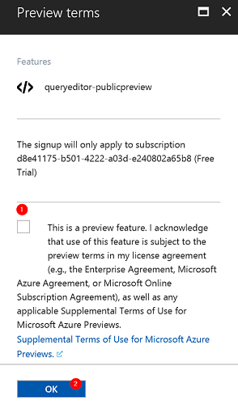

Introduction
Welcome to the Real-Time Predictive Maintenance Solution with Cortana Intelligence Workshop!
About the Workshop
Build an end-to-end real-time predictive maintenance solution using Azure Machine learning, IoT Hubs, Stream Analytics, and Power BI. In this workshop you'll also learn how to store and manipulate massive amounts of data using Azure Data Lake Store and Azure Data Warehouse. The workshop is heavily focused on:
- Machine Learning
- Real-Time Analytics
- Big Data Analytics
The workshop is presented by:
- Slava Trofimov KiZAN Technologies
- Lucas Feiock KiZAN Technologies
- Mike Branstein KiZAN Technologies
Agenda
Machine Learning
- Provision a resource group for the experiment
- Provision a machine learning workspace,
- Build a machine learning model to predict remaining useful life of a device, and publish as a web service
Real-Time Analytics
- Provision Data Lake Store
- Provision, configure and start a Stream Analytics job
- Invoke a machine learning function to predict remaining useful life
- Build a Power BI report and dashboard to visualize streaming data
Big Data
- Provision Azure Data Factory; create and execute a job to copy additional data from KiZAN's blob storage to Azure Data Lake Store
- Provision an Azure SQL Data Warehouse
- Register an Application with Azure Active Directory and grant permissions to the Azure Data Lake Store
- Load data from Azure Data Lake Store to Azure SQL Data Warehouse
- Query Azure SQL Data Warehouse
- Connect to Azure SQL Data Warehouse using Power BI and create a report
Prerequisites
- Computer with a modern Web browser and internet access (the computer may run any operating system and does not require any special software besides the web browser)
- Access to a Microsoft Azure subscription with permissions to create resource groups and other resources
- Access to a Power BI account (either a free or a Pro account)
Complete the Prerequisites
An Azure subscription and a Power BI account are required to complete the KiZAN Cortana Intelligence workshop. If you do not have these accounts already, this section will walk you through the process of activating free trials.
Creating a Trial Azure Subscription
NOTE: If you have an Azure subscription already, you can skip this section. If you have a Visual Studio subscription (formerly known as an MSDN account), you get free Azure credits every month. Check out the next section for activating these benefits.
There are several ways to get an Azure subscription, such as the free trial subscription, the pay-as-you-go subscription, which has no minimums or commitments and can be canceled any time or an Enterprise agreement subscription. You can buy an Azure subscription directly from Microsoft or from a Microsoft Value Added Reseller. In this exercise, you'll create a free trial subscription.
Exercise: Create a Free Trial Subscription
Browse to the following page http://azure.microsoft.com/en-us/pricing/free-trial/ to obtain a free trial account.

Click Start free.

If you have a Microsoft account, enter the credentials for the Microsoft account that you want to use. You will be redirected to the Sign up page.
NOTE: If you do not have a Microsoft account, click Create a new Microsoft account and complete the following steps:.
Complete a 4-part registration form

- About you - provide basic personal information
- Verification by phone - enter your mobile phone number, and click Send text message; when you receive the verification code, enter it in the corresponding box and click Verify code
- Verification by card - Enter your credit card information - your card will not be charged unless you explicitly transition to a paid plan
- Agreement - check the I agree to the subscription Agreement, offer details, and privacy statement option, and click Sign up
NOTE: Your credit card will not be charged unless you explicitly transition to a paid plan. When your trial period expires or if you run out of credit, your services will be shut down unless you choose to be billed.
Your free subscription will be set up, and you will soon be ready to start using it.
Log into https://portal.azure.com to access your subscription.

Activating Visual Studio Subscription Benefits
If you happen to be a Visual Studio subscriber (formerly known as MSDN) you can activate your Azure Visual Studio subscription benefits. You can use your MSDN software in the cloud, and most importantly, you get up to $150 in Azure credits every month (as well as additional benefits).
NOTE: If you are not a Visual Studio subscriber, please skip this exercise.
Exercise: Activate Visual Studio Subscription Benefits
To active the Visual Studio subscription benefits, browse to the following URL: http://azure.microsoft.com/en-us/pricing/member-offers/msdn-benefits-details/
Scroll down to see the full list of benefits you will get for being a MSDN member and read the FAQ section for additional details.
Click Activate to activate the benefits.

You will need to enter your Microsoft account credentials to verify the subscription and complete the activation steps.
Signing up for a Power BI Account
If you already have a Power BI account, you can use it to complete this workshop. If you do not have a Power BI account, follow the steps below to sign up for your free account:
Exercise: Create Power BI Account
To sign up for a free Power BI service, navigate to: https://powerbi.microsoft.com/ and click on the Sign up free button in the upper right corner.

Scroll down to the Power BI Cloud collaboration and sharing section and click the TRY FREE button, which will redirect you to the start of the sign-up process.

Enter your work email address and press the Sign up button.

NOTE: Power BI Service requires a work email address, which will be different from the account you used to set up a trial Azure subscription. You will be unable to register with a Microsoft account, such as @hotmail.com or @outlook.com or with other consumer-oriented email accounts.
If you are using your work email address with other Microsoft services (such as Office 365), you will be asked to sign in with your existing account.

If you do not have an existing account, you will be asked to create one.

After creating an account or signing in, follow the prompts to complete your sign up for the Power BI account.
At the end of the process, you should be able to reach your personal Power BI workspace, which will look something like this:

NOTE: A free Power BI account will be sufficient to complete the exercises in this workshop. However, you will be unable to share your content or collaborate with other users. Optionally, you may choose to try Power BI Pro free for 60 days. Power BI Pro has all the features of the free version of Power BI, and additional sharing and collaboration features. To try a 60-day free trial of Power BI Pro, sign into Power BI, and try one of the Power BI Pro features, such as create an app workspace or sharing a dashboard. When you try any of these features, you will be prompted to start your free trial.

{kind=link}
{kind=link}
{kind=link}
Build a Machine Learning Model
Create a new resource group for the Predictive Maintenance Solution
Exercise: Create an Azure Resource Group
Azure Resource groups are resources that serve as "containers" for collections of other resources. The benefit of resource groups is that they allow an Azure administrator to roll-up billing and monitoring information for resources within a resource group and manage access to those resources as a set. We will place all resources for the Predictive Maintenance solution into a common resource group.
Log into your Azure Portal by navigating to https://portal.azure.com.

Click on the "+" sign in the upper left corner and type in the term "Resource Group" in the Search bar, then select "Resource Group" from the list of matching resource types.

Review the description of the resource you are about to create and press the Create button.
NOTE: The process of finding a desired type of a new resource to be created is applicable to all types of resources. You will do this frequently throughout this workshop.
Enter the name of resource group, confirm subscription to which the resource group belongs and select a location for the resource group.

Confirm that the resource group was created successfully.

Create a Machine Learning Workspace
A key part of the predictive maintenance solution that we are about to build is a machine learning model that will estimate the useful life of an electrical motor based on various factors. This machine learning model will be designed in the Azure Machine Learning Studio. To use Azure Machine Learning Studio, you need to have a Machine Learning workspace, which contains the tools you need to create, manage, and publish advanced analytics solutions in the cloud, as well as collaborate with your colleagues on the development of these solutions.
As part of setting up a Machine Learning Workspace, we will also create a Machine Learning Web Service Plan. After you have developed an experiment in Machine Learning Studio, we will deploy the experiment as a web service hosted on Azure. The costs associated with web services are managed under web service pricing plans that you will select.
Exercise: Create a Machine Learning Workspace and Web Service Plan
Click on the "+" sign in the upper left corner and type in the term "Machine Learning" in the Search bar, then select "Machine Learning workspace" from the list of matching resource types.
Review the description of the resource you are about to create and press the Create button.

Specify the properties of the Machine Learning workspace.
- Specify workspace name
- Confirm the subscription for the workspace
- Select the existing resource group
- Select the desired location
- Create a new storage account and provide the name for the account
- Select "Standard" pricing tier
- Create a new "Web service plan" and provide the name for the web service plan
- Click to select a pricing tier for the web service plan
- Click on the desired pricing tier
- Click on the Select button to confirm pricing tier selection
- Click on the Create button to provision the machine learning workspace
NOTE: Machine Learning Web Service Plans allow you to customize your costs based on the number of transactions and compute hours used by your active web services per month. A free DEVTEST Web service plan will be sufficient for the purposes of this workshop. However, you may need to upgrade to another tier depending on how much you use this web service.
Create a Machine Learning Experiment
Exercise: Create a Machine Learning Experiment
During this exercise, you will start developing a machine learning model using Azure Machine Learning Studio. The purpose of the model is to predict the remaining useful life of an electrical motor based on its attributes and operating conditions.
After logging into the Azure portal, navigate to the Machine Learning Workspace:

From the Machine Learning Workspace overview blade, launch the Machine Learning Studio.

Sign into the Machine Learning Studio.

From the experiments area of the Machine Learning Studio, create a new Experiment.

We will start with a blank experiment, by clicking the "Blank Experiment" tile, which will open a new experiment design area.

The experiment design area consists of an experiment canvas in the center, a navigation bar with a list of available modules on the left and a properties pane on the right.
Import Data
Exercise: Import Data
We will add the first module to our machine learning experiment, which will import the raw data for the model. Expand the Data Inputs and Outputs folder, find the Import Data module and drag it onto the experiment canvas.

Now, let's configure the Import Data Module by clicking on the Launch Import Data Wizard, and selecting Web URL via HTTP from the list of available sources.

On the next step of the wizard, provide the Data Source URL:
Select CSV data format and indicate that the CSV file has a header row:

Complete the Import Data Wizard configuration.

After configuring the data import wizard, let's run the experiment to make sure that the data can be imported.

You should see a green check mark indicating that the module has run successfully. Now, let's examine and visualize the content of the dataset that we have just imported by right-clicking on the Import Data module, clicking on "Results dataset" and clicking on "Visualize."

You will observe column and row counts, a sample of data, as well as histograms depicting the distribution of values in each column.
NOTE: It is a good practice to review each column carefully to identify any anomalies or data quality issues that need to be addressed before training your machine learning model. You can click on the heading of each column to see basic descriptive statistics for column values, as well as a a more detailed histogram of value distribution.

Now that we know that the data has been imported successfully, let's configure the Import Data Module to Use cached results, since we do not expect our source data to change.

Rename and Save the Draft of the Experiment
By default, our experiment is titled Experiment created on {date}. Let's give a more descriptive name to our experiment by selecting the current title in the title bar and replacing it with a more suitable title, such as Predictive Maintenance.

We are now ready to save the draft of the experiment.

Prepare Data
Exercise: Edit Metadata of the Source Dataset
While reviewing imported dataset, we noticed two columns containing categorical values (Motor Type and Device Type). Let's indicate that these columns contain categorical data to ensure that they are handled properly by various machine learning algorithms. To help us with this task, we will use the Edit Metadata module. Let's find this module by typing the phrase Edit metadata in the search bar. Then, let's drag the Edit Metadata module to the design surface of the experiment.

Connect the output of the Import Data module to the input of the Edit Metadata module.

Launch column selector.

Select Motor Type and Device Type columns:

Make selected columns categorical.

Exercise: Clean Missing Data
During the data preparation phase of the data science process, we may need to handle the possibility of encountering missing data in one or more columns of certain records. For this experiment, let's replace missing values with the average (mean) of other values in the corresponding column.
Find the Clean Missing Data module by typing the word Clean in the search bar. Then, drag the Clean Missing Data module onto the design surface.

Connect the output of the Edit Metadata module to the input of the Clean Missing Data module.

Launch column selector and select all columns, except for Motor Type, Device Type and Remaining Useful Life.

Configure the cleaning mode to Replace missing values with the mean.

Exercise: Split Source Data into a Training Set and Validation Set
When we develop machine learning models, it may be possible to train a model that can make accurate predictions for those records that have been used to train the model. Yet, our objective is to train a model that can make accurate predictions for new data (data that the model has not previously seen). One of the simplest ways to simulate the "new" data is by splitting our original dataset into partitions:
- The training set that will be used to train the model
- The validation set that will be used to estimate the prediction error of the model
NOTE: In more advanced data science processes, it is common to split the data into three sets: the training set that is used to train several models, the validation set that is used to estimate prediction error in order to select the best model, and the test set that is used to estimate the prediction error of the final model that gets selected. For simplicity, we will only use the training and validation sets in this experiment.
Find the Split Data module by typing the word Split in the search bar. Then, drag the module onto the design surface.

Connect the output of the Clean Missing Data module to the input of the Split Data module.

Configure the Split Data module by setting the fraction of rows in the first output dataset to 0.7

Train the Machine Learning Model
Exercise: Train the Machine Learning Model
Find the Train Model module by typing the phrase Train Model in the search bar. Then, drag the module onto the design surface.

Connect the first output of the Split Data module to the second input of the Train Model module.

We will use the Boosted Decision Tree Regression to predict the Remaining Useful Life of electrical motors. Let's initialize the machine learning model by selecting the appropriate algorithm and specifying the algorithm parameters.
NOTE: The process of selecting a suitable algorithm and the selection of optimal algorithm parameters is a crucial part of the data science process. While some algorithms may be suitable for certain types of machine learning problems, it is often necessary to try and compare multiple algorithms and multiple combinations of algorithm parameters. For simplicity, we will only use a single algorithm with a basic set of parameters in this exercise.
Find the Boosted Decision Tree Regression module by typing the word Boosted in the search bar. Drag the module onto the design surface. Then, drag the output of the Boosted Decision Tree Regression module to the first input of the Train Model module.

Configure the Train Model module by launching the column selector and selecting the Remaining Useful Life column (as the variable to be predicted).

Configure the parameters of the Boosted Decision Tree Regression module as illustrated below:

Score and Evaluate the Machine Learning Model
Exercise: Score the Machine Learning Model
During the scoring process, we will use the newly trained Boosted Decision Tree Regression model to predict the remaining useful life of records in the validation dataset.
Find the Score Model module by typing the phrase Score Model in the search bar. Drag the module onto the design surface.

Drag the output of the Train Model module to the first input of the Score Model module. Then, drag the second output of the Split Data module to the second input of the Score Model module.
Configure the Score Model module by ensuring that the Append score columns to output option is checked.

Exercise: Evaluate the Machine Learning Model
To evaluate the machine learning model, we will compare the predictions of remaining useful life made by the model with actual remaining useful life of motors in our validation dataset.
Find the Evaluate Model module by typing the word Evaluate in the search bar. Drag the module onto the design surface. Then, connect the output of the Score Model module to the first input of the Evaluate Model module.

Run the Machine Learning Experiment
Now that the machine learning model is built, we can run the entire experiment.
Press the Run button at the bottom of the screen and click the Run button in the pop-up menu to run the entire experiment.

Review and Save the Machine Learning Model
Exercise: Review the Machine Learning Model
After running the experiment, we can review the accuracy of the machine learning model. Right-click on the Evaluate Model module. Click on Evaluation results and click on Visualize.

You will observe a summary describing the error rate of the machine learning model you had built.

You may also visualize the decision trees that have been constructed while training the Machine Learning model. Right-click on the Train Model module. Click on Trained Model and click on Visualize.

You will see a screen with a list of all decision trees, and the capabilities for interactive exploration of the splits in the decision tree.

Save the Machine Learning Experiment
Confirm that your completed experiment looks similar to the following diagram.

Save the experiment.

Create a Machine Learning Web Service
After creating and training the machine learning model, we will operationalize the model by creating a Web Service that will enable us to make predictions of remaining useful life of electrical motors. Later on, we will use this web service in conjunction with a Stream Analytics job to predict and track the health of electrical motors in near-real-time.
Exercise: Create a Machine Learning Web Service
If necessary, open the machine learning experiment that you had created in the previous section. Then, click on the Set Up Web Service button and click on Predictive Web Service [Recommended].

Machine Learning Studio will automatically generate a Web Service experiment based on the model that you had previously created, which will look as follows:

We will need to make several modifications to this draft of the Web Service experiment to customize it for our needs.
Adjust Web Service Input Parameters
First, we will need to make sure that remaining useful life is not expected as a web service parameter. Rearrange the layout of modules in the predictive experiment and remove the connection between the Import Data module and the Edit Metadata module.

Find the Select Columns in Dataset module by typing the phrase Select Columns in the search bar. Drag the Select Columns in Dataset module onto the design surface and place it between the Import Data and Edit Metadata modules. Connect the output of the Import Data module to the input of the Select Columns in Dataset module.

Launch column selector and exclude the Remaining Useful Life column from the dataset.

Connect the output of the Select Columns in Dataset module to the input of the Edit Metadata module.

Adjust Web Service Outputs
Let us adjust the outputs of the web service such that it returns only the predictions of the remaining useful life and no other data.
First, remove the connection between the Score Model module and the Web service output module.

Find the Select Columns in Dataset module by typing the phrase Select Columns in the search bar. Drag the Select Columns in Dataset module onto the design surface and place it between the Score Model module and the Web service output modules. Connect the output of the Score Model module to the input of the Select Columns in Dataset module.

Launch column selector and include the Scored Labels column from the dataset (while excluding all others).

Connect the output of the Select Columns in Dataset module to the input of the *Web service output" module.

Review, run and save the experiment
Your predictive experiment should now look something like the following diagram:

Let's run the entire predictive experiment:

Save the predictive experiment.
Deploy Predictive Web Service
Exercise: Deploy the Predictive Web Service
Once the predictive experiment has been run, deploy the predictive web service. Press the Deploy Web Service button and click Deploy Web Service [New] Preview.

Specify the name, storage account and price plan for the web service. Then, click Deploy.

You will be redirected to the web service management portal. Click on the Use Web Service link.

In the list of basic consumption information, note the Primary Key and Request-Response values - you would use these values to access your Machine Learning Web Service programmatically. You do not need to record these values for the purposes of this workshop.

Provision Azure IoT Hub and Azure Data Lake Store
The architecture of most IoT solutions includes several common components, such as a hub that receives messages from connected devices and a big data store that could be used to permanently store the data collected from the devices. We will create both of these resources during this section of the workshop.
Create an Azure IoT Hub
Let us create an Azure IoT Hub to serve as a central ingestion point for telemetry data sent by our connected devices. Azure IoT Hub supports billions of clients that can securely send data to the hub to report on their state and operating conditions. Azure IoT Hub supports bi-directional communications by allowing cloud-to-device messages to be sent to the devices.
Exercise: Create an Azure IoT Hub
Log into your Azure Portal by navigating to https://portal.azure.com.
Click on the "+" sign in the upper left corner and type in the term "IoT Hub" in the Search bar, then select "IoT Hub" from the list of matching resource types.

Review the name of the resource and click on the Create button.

Specify the parameters of the IoT Hub:
NOTE: The name of the IoT Hub must be globally unique across all Azure subscriptions. If the name you tried to use is not available, please specify a different name.
- Specify the name of the hub
- Select pricing tier: F1-Free
- Select Azure Subscription in which the hub will be created
- Indicate that you will be using an existing resource group
- Select resource group name
- Specify the location for the IoT Hub
- Press the Create button

Once the IoT Hub has been created, take a few moments to review the IoT Hub blade in your Azure Portal and familiarize yourself with the features and parameters of the IoT Hub.
NOTE: Provisioning of an IoT Hub is a key part of building a real-time analytics solution for connected devices. During this workshop, we will be using an IoT Hub provisioned by KiZAN. Therefore, the IoT Hub that you had just provisioned will be present in your subscription, but will not be actively used throughout the remainder of the workshop.
Create an Azure Data Lake Store
Let us create a data lake store to store to store the telemetry data from our IoT devices. Azure Data Lake Store is a secure, massively-scalable big data storage service for unstructured, semi-structured, and structured data. Azure Data Lake Store can store trillions of files with individual files being over a petabyte in size, which makes it ideal for a variety of enterprise and scientific applications. The Data Lake Store can be used to capture data of any size, type and velocity to support operational and exploratory analytics.
Exercise: Create an Azure Data Lake Store
Log into your Azure Portal by navigating to https://portal.azure.com.
Click on the "+" sign in the upper left corner and type in the term "Data Lake" in the Search bar, then select "Data Lake Store" from the list of matching resource types.

Review the name of the resource and click on the Create button.

Specify the parameters of the Data Lake Store:
NOTE: The name of the data lake store must be globally unique across all Azure subscriptions. If the name you intended to use is not available, please specify a different name.
- Specify the name of the Data Lake Store
- Subscription
- Indicate that you will be using an existing resource group
- Select resource group name
- Specify location: East US 2
- Select pricing tier
- Enable encryption to secure your data at rest
- Check the box to pin the resource to your dashboard in the Azure Portal
- Press the Create button

NOTE: It is typically a good practice to provision related data-intensive resources in the same location - this will help to minimize latency and maximize throughput while one service accesses resources stored in another service. This approach also helps to minimize egress charges (charges for data leaving an Azure data center or data being moved from one data center to another data center). While not every resource type is available in every Azure location, we will plan to provision most of the resources in the East US 2 Azure location during this workshop.
Create an Azure Stream Analytics Job
Once telemetry data from our connected devices has been ingested, we can use use Azure Stream Analytics to perform real-time processing and analysis of massive volumes of data in motion. Azure Stream Analytics supports connectivity to event streams (such as IoT Hubs and Event Hubs), as well as to reference data that changes infrequently. Azure Stream Analytics transformations are defined using a simple SQL-like language that has been extended to support the temporal (time-based) nature of the data. Azure Stream Analytics is capable of processing complex events in a variety of formats.
Create and Configure the Job
Exercise: Create an Azure Stream Analytics Job
Log into your Azure Portal by navigating to https://portal.azure.com.
Click on the "+" sign in the upper left corner and type in the term "IoT Hub" in the Search bar, then select "IoT Hub" from the list of matching resource types.

Review the name of the resource and click on the Create button.

Specify the parameters of the Stream Analytics Job:
- Specify the name of the job
- Select Azure Subscription in which the job will be created
- Indicate that you will be using an existing resource group
- Select resource group name
- Specify the location for the IoT Hub
- Check the box to pin the resource to your dashboard in the Azure Portal
- Press the Create button

Once the Stream Analytics job has been created, take a few moments to review the Stream Analytics blade in your Azure Portal and familiarize yourself with the features and parameters of this resource.
Configure Inputs for the Stream Analytics Job
A stream analytics job must have one or more input and one or more output. Our job will have two inputs and two outputs. Let's start by creating our first input.
Exercise: Configure Inputs
NOTE: Names and configuration settings described in this exercise must match those listed in the instructions.
Create the Data Stream Input
Navigate to the Overview blade of your Stream Analytics job and click on the Inputs tile.

Click on the Add button to add your first input.

Define the details for the input:
- Specify the name or the alias for the input: KiZAN-IoT-Hub
- Set Source Type to Data stream
- Set Source to IoT Hub
- Set import option to Provide IoT hub settings manually
- Set IoT hub to IOTH-KiZANCortanaWS01
- Set endpoint to Messaging
- Set shared access policy name to service
- Shared access policy key: Your shared access policy key will be provided during the workshop
- Consumer group: Your consumer group name will be provided to you during the workshop
- Set event serialization format to JSON
- Set Encoding to UTF-8
- Press the Create button

Create the Reference Data Input
In addition to the streaming events, a Stream Analytics Job may utilize reference data, such as device metadata or other types of data that do not change frequently. We will join device metadata with reference data in order to enrich the outputs of the Stream Analytics Job.
Navigate to the Overview blade of your Stream Analytics job and click on the Inputs tile.

Click on the Add button to add your second input.
Define the details for the input:
- Specify the name or the alias for the input: KiZAN-IoT-Device-Reference-Data
- Set Source Type to Reference Data
- Set import option to Provide blob storage settings manually
- Set storage account to kizandevices
- Storage account key: Your storage account key will be provided during the workshop
- Set container to referencedata
- Set path pattern to DeviceReferenceData.csv
- Set event serialization format to CSV
- Set delimiter to comma (,)
- Set Encoding to UTF-8
- Press the Create button

Your inputs should now be properly configured.
Define Outputs for your Stream Analytics Job
Your Stream Analytics Job will have two outputs: Power BI for real-time data visualization and Azure Data Lake Store for persistent storage of your telemetry data.
Exercise: Define Outputs
NOTE: Names and configuration settings described in this exercise must match those listed in the instructions.
Create the Azure Data Lake Output
Click on Outputs in the navigation pane for the Stream Analytics Job, and click on the Add button.

Specify the details for the new output:
- Set Output alias to DataLakeStore
- Set Sink to Data Lake Store
- Click on Authorize to authorize your output to connect to a Data Lake Store.

Complete configuring the output:
- Import option: Select Data Lake Store from your subscription
- Subscription: Specify the name of your subscription.
- Account name: Specify the name of your Azure Data Lake Store (it will be unique to your subscription)
- Path prefix pattern: telemetry/{date}
- Date format: YYYY/MM/DD (this format will ensure that telemetry data for each day will be stored in a separate folder)
- Event serialization format: JSON
- Encoding: UTF-8
- Format: Line separated
- Click the Create button

Create the Power BI Output
From the Outputs section of the Stream Analytics Job blade, click the Add button.

Specify the details for the new output:
- Set Output alias to PowerBI
- Set Sink to Power BI
- Click on Authorize to authorize your output to connect to your Power BI account.

A pop-up window will open allowing you to log into your Power BI Account.

Finish setting up the Power BI output:
- Set Group Workspace to My workspace
- Set Dataset Name to Device Telemetry
- Set Table Name to Device Telemetry
- Click the Create button

Your outputs should now be properly configured.
Define Machine Learning Function for your Stream Analytics Job
Your Stream Analytics Function will ingest streaming telemetry data from your connected electrical motors, combine telemetry data with device metadata (such as device types, maintenance history and operating characteristics), and predict the remaining useful life of the device. The prediction of the remaining useful life will be made by calling the Machine Learning Web Service that we have created in an earlier exercise.
Exercise: Define Machine Learning Function
To get started, click on Functions in the navigation pane of the Stream Analytics Job blade.

Specify the details for the new function:
- Set Function Alias to RemainingUsefulLife
- Set Function Type to Azure ML
- Set Import option to Select from the same subscription
- Set URL to the name of the Machine Learning web service that you had created in your subscription
- Click the Create button.
Write a Query to Transform and Analyze Streaming Data
Stream Analytics Jobs use a SQL-like query language to define transformations for the streaming data. We will write a query that will perform the following tasks:
- Summarize telemetry data for each 1-minute period
- Summarize telemetry data for each 15-minute period
- Summarize telemetry data for the past 24 hours
- Join summarized telemetry data with a reference dataset containing device metadata and derive a variety of metrics, such as
- Run Time Since Maintenance
- Run Time Since Overhaul
- Run Time Since Production
- Age Since Overhaul
- Age Since Production
- Average (mean) temperature over the latest 1-minute period
- Standard deviation of temperature over the latest 1-minute period
- Range of temperature over the latest 1-minute period
- Maximum temperature over the latest 1-minute period
- Average (mean) temperature over the latest 15-minute period
- Standard deviation of temperature over the latest 15-minute period
- Range of temperature over the latest 15-minute period
- Maximum temperature over the latest 15-minute period
- Number of observations exceeding the maximum operating temperature over the past 24 hours
- Call the Machine Learning Web Service to get a prediction of remaining useful life
- Send data to Power BI for real-time visualization
- Send data to Data Lake Store for permanent storage.
Exercise: Create a Stream Analytics Query
Click on Query in the navigation pane for the Stream Analytics Job. You will be directed to a query editor window where you will be able to specify a stream analytics query that will transform the streaming data:

If you are familiar with the Structured Query Language (SQL), you will be right at home with the Stream Analytics Query language. You will discover some constructs that are unique to this language. We encourage you to consult the Stream Analytics Query Language Reference for additional details.
Copy the Stream Analytics Query shown below to your clipboard -- be sure to use the handy Copy button in the upper right corner of the code block. Then, paste the query into the query editor window, and press the Save button.
--Summarize temperature data for each 1-minute period
WITH [TemperatureByDevice1Minute] AS (
SELECT T.deviceId AS [Device Id],
System.Timestamp AS [Event Time],
AVG(CAST(T.tempF as float)) AS [TempF Mean - 1 Minute],
STDEV(CAST(T.tempF as float)) AS [TempF StDev - 1 Minute],
MAX(CAST(T.tempF as float)) - MIN(CAST(T.tempF as float)) AS [TempF Range - 1 Minute],
MAX(CAST(T.tempF as float)) AS [TempF Max - 1 Minute]
FROM
[KiZAN-IoT-Hub] T TimeStamp By [EventEnqueuedUtcTime]
WHERE T.tempF BETWEEN 50 AND 250
GROUP BY HoppingWindow(second, 60, 30),
T.deviceId
)
--Summarize temperature data for each 15-minute period
, [TemperatureByDevice15Minutes] AS (
SELECT T.deviceId AS [Device Id],
System.Timestamp AS [Event Time],
AVG(CAST(T.tempF as float)) AS [TempF Mean - 15 Minutes],
STDEV(CAST(T.tempF as float)) AS [TempF StDev - 15 Minutes],
MAX(CAST(T.tempF as float)) - MIN(CAST(T.tempF as float)) AS [TempF Range - 15 Minutes],
MAX(CAST(T.tempF as float)) AS [TempF Max - 15 Minutes]
FROM
[KiZAN-IoT-Hub] T TimeStamp By [EventEnqueuedUtcTime]
WHERE T.tempF BETWEEN 50 AND 250
GROUP BY HoppingWindow(second, 900, 30),
T.deviceId
)
--Summarize temperatures by device over a 24-hour period
, [TemperaturesByDevice24Hours] AS (
SELECT
System.Timestamp AS [Time Stamp],
T.[deviceId] AS [Device ID],
CEILING(CAST(T.[tempF] as float)) AS [Temperature],
MAX(CAST(T.[runTime] AS bigint)) AS [Run Time],
COUNT(*) AS [Record Count]
FROM
[KiZAN-IoT-Hub] T TimeStamp By [EventEnqueuedUtcTime]
WHERE T.tempF BETWEEN 50 AND 250
GROUP BY HoppingWindow(second, 86400, 30),
T.[deviceId],
CEILING(CAST(T.[tempF] as float))
)
--Summarize excessive temperature events over a 24-hour period
, [TemperatureAlertsByDevice24Hours] AS (
SELECT
system.timestamp AS [Time Stamp],
T.[Device ID],
RD.[Motor Type],
RD.[Device Type],
MAX(T.[Run Time] - CAST(RD.[Maintenance Run Time] as bigint)) AS [Run Time Since Maintenance],
MAX(T.[Run Time] - CAST(RD.[Overhaul Run Time] as bigint)) AS [Run Time Since Overhaul],
MAX(T.[Run Time]) AS [Run Time Since Production],
DATEDIFF(day, CAST(RD.[Overhaul Date] AS datetime), System.Timestamp) AS [Age Since Overhaul],
DATEDIFF(day, CAST(RD.[Production Date] AS datetime), System.Timestamp) AS [Age Since Production],
SUM(
CASE WHEN T.Temperature > (CAST(RD.[Max Operating Temperature] as float))
THEN T.[Record Count]
ELSE 0
END) AS [Observations Above Max Temp - 24 Hours]
FROM
[TemperaturesByDevice24Hours] T
INNER JOIN [KiZAN-IoT-Device-Reference-Data] RD
ON T.[Device Id] = RD.[Device Id]
GROUP BY system.timestamp,
T.[Device ID],
RD.[Motor Type],
RD.[Device Type],
RD.[Overhaul Date],
RD.[Production Date]
)
, DataWithPredictions AS (
SELECT
System.Timestamp AS [Time Stamp],
T1M.[Device ID],
T24H.[Motor Type],
T24H.[Device Type],
T24H.[Run Time Since Maintenance],
T24H.[Run Time Since Overhaul],
T24H.[Run Time Since Production],
T24H.[Age Since Overhaul],
T24H.[Age Since Production],
--Summaries for each 1-minute period
T1M.[TempF Mean - 1 Minute],
T1M.[TempF StDev - 1 Minute],
T1M.[TempF Range - 1 Minute],
T1M.[TempF Max - 1 Minute],
--Summaries for each 15 minute interval
T15M.[TempF Mean - 15 Minutes],
T15M.[TempF StDev - 15 Minutes],
T15M.[TempF Range - 15 Minutes],
T15M.[TempF Max - 15 Minutes],
T24H.[Observations Above Max Temp - 24 Hours],
--Call Azure Machine Learning web service to get a Remaining Useful Life prediction
RemainingUsefulLife(
T24H.[Motor Type],
T24H.[Device Type],
T24H.[Run Time Since Maintenance],
T24H.[Run Time Since Overhaul],
T24H.[Run Time Since Production],
T24H.[Age Since Overhaul],
T24H.[Age Since Production],
T1M.[TempF Mean - 1 Minute],
T1M.[TempF StDev - 1 Minute],
T1M.[TempF Range - 1 Minute],
T1M.[TempF Max - 1 Minute],
T15M.[TempF Mean - 15 Minutes],
T15M.[TempF StDev - 15 Minutes],
T15M.[TempF Range - 15 Minutes],
T15M.[TempF Max - 15 Minutes],
T24H.[Observations Above Max Temp - 24 Hours]
) AS [Remaining Useful Life]
FROM
[TemperatureByDevice1Minute] T1M
INNER JOIN [TemperatureByDevice15Minutes] T15M
ON T1M.[Device Id] = T15M.[Device Id]
AND DATEDIFF(second,T1M,T15M) = 0
INNER JOIN [TemperatureAlertsByDevice24Hours] T24H
ON T1M.[Device Id] = T24H.[Device Id]
AND DATEDIFF(second,T1M,T24H) = 0
)
--Push data with predictions to PowerBI
SELECT *
INTO [PowerBI]
FROM DataWithPredictions
--Store data with predictions in Azure Data Lake Store
SELECT *
INTO [DataLakeStore]
FROM DataWithPredictions
Review and Start the Stream Analytics Job
Exercise: Review and Start the Stream Analytics Job
By now, you have defined all major components of a Stream Analytics job, including the inputs, outputs, functions and query.
You can review a graphical diagram that illustrates the structure of your job by going to Job Diagram in the navigation bar.

Take a moment to examine the diagram.

Now, we are ready to star the Stream Analytics Job. Navigate to the Overview blade of the Stream Analytics Job and press the Start button.

You will be directed to a page that will allow you to specify the moment from which the job should start reading data from the data source. Select Now and press the Start button.

It may take a couple of minutes for the Stream Analytics job to start. You will see a confirmation once the job has started successfully.
Visualize Streaming Data With Power BI
Once the Stream Analytics got started, it created a streaming dataset in your Power BI account and started pushing data to the data set. We are ready to develop Power BI reports and dashboards to visualize the data.
Create a Power BI Report
Exercise: Create a Power BI Report
Log into your Power BI account by navigating to https://app.powerbi.com and logging in with your username and password. After logging in you will see the content of your personal workspace. Click on the down-arrow next to the My Workspace link to expand the navigation menu for your workspace.

You should see a list of Dashboards, Reports, Workbooks and Datasets. You should see a Device Telemetry dataset among your datasets. Click on the Device Telemetry dataset.

NOTE: Unless you have previously created reports, dashboards, workbooks, or other datasets, you will not see any other content in your workspace.
After click on the Device Telemetry dataset, you will see a blank report based on this dataset.

The report design area consists of several main sections:
- Report canvas that serves as the primary design area for your report.
- Visualizations pane that allows you to add and configure visuals for the report
- Filters pane that allows you to specify relevant filters for your report
- Fields pane that lists tables and fields that comprise your dataset.
Let's add the first visual to the report:
- Drag the Line chart visual to the report canvas
- Resize the visual to make it larger, and make sure that the line chart visual is selected.
- Find the time stamp field in the Fields pane.
- Drag the time stamp field to the Axis placeholder for your line chart.
- Find the device id field in the Fields pane.
- Drag the device id field to the Legend placeholder for your line chart.
- Find the tempf mean - 1 minute field in the Fields pane.
- Drag the tempf mean - 1 minute field to the Values placeholder for your line chart.
At this point you should see a chart that resembles the one shown below:

Let's save your report by expanding the File menu and clicking on Save.

You will be asked to provide the name for your new report. Let's label it Device Telemetry.

Create a Power BI Dashboard
Power BI allows you to combine a set of visuals from one or more reports on a dashboard. By combining visuals from multiple reports, the dashboard can provide a convenient, comprehensive picture of a variety of business processes. Power BI dashboards also provide an ideal way of visualizing streaming data, since the dashboard can be refreshed in near-real-time as new records arrive.
Exercise: Create a Power BI Dashboard
First, open the Device Telemetry report that you have created in the previous exercise.
Then, find and click the Pin icon in the upper right corner of the line chart representing device temperatures over time. This icon will allow you to add a visual to a dashboard.

Indicate that you would like to pin the visual to a new dashboard, specify Device Telemetry as the name of the dashboard, and press the Save button.

Once your dashboard has been created, click on Device Telemetry from the list of dashboards in your navigation bar, which will bring you to the Device Telemetry dashboard.

As you observe the dashboard, you will notice that the data on the dashboard will refresh automatically as new records are pushed by the Stream Analytics job to the streaming dataset in Power BI. No manual actions are necessary to refresh the data.

NOTE: The animation above is accelerated. You should expect to see your streaming dataset refresh every 30 seconds, due to the fact that your Stream Analytics job is configured to output events every 30 seconds.
Enhance your Power BI Report and Dashboard
Power BI provides a rich environment for authoring reports, visualizing data and performing exploratory data analysis. While the simple report that we created in one of the previous exercises is sufficient to illustrate the concepts of report development in Power BI, you may want to experiment with creating more advanced reports. The purpose of the following exercise is to encourage independent exploration of features and capabilities of Power BI.
Optional Exercise: Enhance Power BI Report and Dashboard
First, add several new visuals to the Power BI report, such as:
- Another line chart that illustrates estimated remaining useful life by device over time.
- A bar chart that illustrates highest temperature by device type
- A bar chart that illustrates highest temperature by motor type
- A slicer that allows filtering the content by time stamp
- A slice that allows filtering the content by device id
- A text box that represents the title of the report page
When you are finished, your report should look similar to the following illustration.

Once you have enhanced the report, pin the visual that represents estimated remaining useful life by device over time to the Device Telemetry dashboard.
Your enhanced dashboard should look similar to the illustration below:

Use Azure Data Factory to Load Data into Data Lake Store
In this chapter, you'll learn how to create an Azure Data Factory pipeline and copy data from Azure Blob Storage to Azure Data Lake store.
Create Azure Data Factory
Azure Data Factory is a cloud-based integration service for orchestrating data movements and data transformations. These operations are called pipelines and can be schedule to ingest data from multiple sources, process data using compute services (Azure HDInsight, Hadoop, Spark, Azure Data Lake Analytics, Azure Machine Learning, etc.), and publish to data stores such as Azure Data Lake Store.
Exercise 1: Provision a Data Factory
Browse to the following page https://portal.azure.com/ and log into your Azure account.
- Click the New + to create a new Azure Resource
- Select Data + Analytics
- Click on Data Factory
An alternative is to search for Data Factory in the Azure Marketplace.
- Click the New + to create a new Azure Resource
- Type Data Factory in the Search Box
- Click on Data Factory
On the next blade menu click on the Create button to provision the Azure Data Factory.
Specify the properties of the New data factory.
- Specify name
- Confirm the subscription
- Select the use existing resource group
- Select the previous resource group
- Select the desired location
- Click on the Pin to dashboard checkbox
- Click on the Create button to provision the data factory
This completes the exercise!
Complete Azure Data Factory Copy Wizard
Exercise 2 : Copy Files using Azure Data Factory Copy Wizard
2.1 - Once the data factory has been created, open the resource and click on Copy data (PREVIEW). This will open a new tab to the Azure Data Factory Copy Wizard.
2.2 - On the Properties menu of Copy Data complete the following tasks.
- Specify a task name
- Enter a task description
- Select Run once now
- Click on the Next button
2.3 - On the Source Connection select Azure Blob Storage from the list. Click the Next button to continue.
2.4 On the following screen, enter the storage account information. Click the Next button to continue.
- Specify a connection name
- Select Enter manually from the Account selection method
- Enter the storage account name: kizandevices
- Enter the storage account key Your storage account key will be provided during the workshop
- Click on the Next button
2.5 On the following screen, select the input folder device-operating-data. Then, click the Choose button.

2.6 On the following screen, click the check box for copying files recursively. Click the Next button to continue.
2.7 A - Azure Data Factory will then scan the files selected and automatically detect the File Format settings.
2.7 B - In addition to the settings, a preview of the files will be shown. Once all settings are correct, click the Next button.
2.8 - On the Destination data store screen, select Azure Data Lake Store from the list. Click the Next button to continue.
2.9 - Next we will enter the Azure Data Lake Store connection details.
- Specify a connection name
- Select From Azure subscriptions as the Data Lake selection method
- Select the Azure subscription
- Select the Data Lake store account name
- Select the Authentication type as OAuth (This will prompt for account information on a later step)
- Click on the Next button
2.10 The next step is to control how the data will be copied. The options available are the following.
- Merge files - will combine files into one large file
- Preserve hierarchy - copy all files and folder structures
- Flatten hierarchy - remove all folders and copy all files into one folder
Select Preserve hierarchy and click the Next button to continue.
2.10 The next step is to control how the data gets saved. Make sure the Add header to file checkbox is checked. Click the Next button to continue.
2.11 Settings will control how the data is moved in Azure. These settings can be changed to allocate a specific number of resources to copy data. Leaving these at Auto will let Azure determine the proper number of resources. Click the Next button to continue.
2.12 - The summary screen contains a detail list of the options selected for the Copy Wizard. Click the Authorize button to enter account information required on step 2.9. Click the Next button to continue.
2.13 - A popup window will prompt for Azure account information. Sign in to continue.
2.14 - Review the Summary page. Once approved, click the Next button to begin the deployment process of the Azure Data Factory.

2.15 - Once deployment is complete, follow the Click here to monitor copy pipeline link.
2.16 - The Azure Data Factory Resource Explorer will be displayed. In the lower middle section, under ACTIVITY WINDOWS, the currently deployed pipeline will be displayed. Monitor the duration to see how long the copy process will take to complete.
This completes the exercise!
Analyze Big Data With Azure Data Warehouse and Power BI
In this chapter, you'll create an Azure SQL Data Warehouse, load the data from Azure Data Lake Store using PolyBase and analyze the data using Power BI.
Azure SQL Data Warehouse
Azure SQL Data Warehouse is a cloud-based massively parallel processing (MPP) relational database, able to handle large enterprise workloads. Designed to efficiently scale up within minutes and integrate across the Azure platform. Azure SQL Data Warehouse compute can be paused and resumed on-demand to eliminate costs during non-business hours. The MPP architecture takes a divide and conquer approach against large distributed datasets. Storage and compute is decoupled allowing more flexibility to grow when required.
Exercise: Provision an Azure SQL Data Warehouse
Browse to the following page https://portal.azure.com/ and log into your Azure account.
- Click the + New to create a new Azure resource
- Select Databases
- Click on SQL Data Warehouse
An alternative is to search for SQL Data Warehouse in the Azure Marketplace.

- Click the + New to create a new Azure resource
- Type Data Warehouse in the Search Box
- Click on SQL Data Warehouse to create a new SQL Data Warehouse
Specify the properties of the New Data Warehouse.
- Specify name
- Confirm the subscription
- Select the Use existing resource group
- Select the previously created resource group
- Select Blank database for the Select source
- Click on the Pin to dashboard checkbox
- Click on the Create button to provision the new data warehouse
Specify the server for the New Data Warehouse.
- Click Server to configure
- Click Create a new server
- Enter the Server Name
- Enter a Server admin login
- Enter a password (see guidelines below). Be sure to record the username and password -- you will need them later.
- Confirm the password
- Select the Location
NOTE: Passwords must be at least 8 characters long and may not contain the account name of the user. In addition, passwords must contain characters from three of the following categories:
- Uppercase letters (A through Z)
- Lowercase letters (a through z)
- Digits (0 through 9)
- Special characters (e.g. !,$,#,%)
Specify the remaining server properties for the New Data Warehouse.
- Verify the correct server is selected
- Leave the default Collation
- Select 400 as the Performance level
- Click the checkbox to Pin to Dashboard
- Click Create to finish provisioning the data warehouse
This completes the exercise!
Configure Application Access to the Azure Data Lake Store
Before we can access data from the Azure Data Lake Store using Azure SQL Data Warehouse, we will need to create and configure an Azure Active Directory application that will be authorized to have such access.
Exercise: Create and Configure Azure Active Directory Application
In the Azure Portal, navigate to the Azure Active Director blade by typing in "Azure Active Directory" in the search bar at the top of the page. Then, select Azure Active Directory from the list of matching resources.

Click on App registrations in the navigation bar.

Click on + New application registration

Specify the details of the new application:

- Provide the name for your application
- Specify Web app/API as application type
- Enter a URL in the Sign on URL field (this URL is not relevant for the purpose of this exercise -- you may specify any valid URL)
- Click the Create button to create the App
Now that the application has been created, let us find and record several important attributes of the application that we will need in a subsequent exercises:
- OAuth 2.0 Token Endpoint
- Application Id
- Authentication Key
Find the OAuth 2.0 Token Endpoint
On the listing of registered apps, click on the Endpoints link.

On the following screen, you will see a list of endpoints associated with this Azure Active Directory APP. Scroll down to the OAUTH 2.0 TOKEN ENDPOINT area and click on the Copy icon to copy the endpoint URL to the clipboard.

Paste and save this URL in a text editor -- you will need it later.
Find Application Id
To find the Application Id of the application, navigate to the overview of the registered app, hover over the Application Id and click on the Copy icon that will appear.

Paste and save the Application Id in a text editor -- you will need it later.
Create the Authentication Key
Find the Keys link in the Settings blade for the Registered App.

In the Keys blade, create and save a new Key:

- Specify Key description
- Set the expiration date
- Click Save
When the authentication key is saved, a key value will be automatically generated. Copy this key, paste it to a text editor and save it -- you will need it later.

NOTE: The value of the key will not be visible after you leave the Keys blade - be sure to save it securely.
This completes the exercise!
Grant Application Permissions to the Data Lake Store
Now, that the application has been created, let us grant it the necessary permissions to access the Azure Data Lake Store.
Exercise: Grant Application Permissions to Data Lake Store
In the Azure Portal, navigate to the Azure Data Lake Store blade by typing in "Data Lake Store" in the search bar at the top of the page. Then, select Data Lake Store from the list of matching resources.

Select the Data Lake Store that you had created earlier.

In the Overview blade of the Data Lake Store, click on the Data Explorer link:

Select the root folder of your Azure Data Lake Store in the Data Explorer window.

Click on Access in the toolbar at the top of the screen.

In the Access blade, click on the + Add button.

Click on the Select User or Group link in the Assign Permissions blade.

Search for and select the Azure Active Directory application that you had registered earlier:

Click on the Select Permissions link in the Assign Permissions blade.

Specify the desired permissions:

- Set Read and Execute permissions
- Add the permissions to the selected folder and all child items
- Add the permissions as an access permission entry and a default permission
- Click OK to apply permissions.
Now, we can use the identity of the Azure Active Directory application that you had registered to view folder content and read files stored in the appropriate folder of the Azure Data Lake store.
This completes the exercise!
Load Data into Azure SQL Data Warehouse using PolyBase
PolyBase is a technology that accesses data outside of the Azure SQL Data Warehouse via T-SQL. It is used to import/export data between Hadoop clusters, Azure Blob Storage, and Azure SQL Data Warehouse.
Exercise: Using PolyBase to connect to Azure Data Lake Store
Open Azure SQL Data Warehouse and click on Query editor (preview) under Common Tasks.
The following message will appear describing the terms of the preview feature. Click the checkbox to accept the terms and then click OK.

Next, sign into the Azure SQL Data Warehouse using the Azure SQL Data Warehouse account from the previous exercise.
- Click on the Login button
- Select SQL Server Authentication in the Authorization Type field
- Specify the user name that you had selected in a previous exercise
- Specify the password that you had selected in a previous exercise
- Click OK to complete the login process.
Once connected to the Azure SQL Data Warehouse, we can being writing queries directly in the browser. The following T-SQL script will create a Master Key and Credential to securely connect to Azure SQL Data Warehouse.
NOTE: This exercise uses Application Id, OAuth 2.0 Token Endpoint, and Authentication Key that you have obtained in a previous exercise in this chapter.
CREATE MASTER KEY;
CREATE DATABASE SCOPED CREDENTIAL ADLCredential
WITH
IDENTITY = '<application_id>@<OAuth_2.0_Token_EndPoint>',
SECRET = '<authentication_key>'
;
-- The identity and secret should look similar to this example:
-- IDENTITY = '87815a3-4873-54fc-e8b1-789154591c0c2@https://login.microsoftonline.com/5b33523-95c5-61ac-a31b-7d0acd0ba8752/oauth2/token',
-- SECRET = 'GdeUjJsEJF7JdKFs+v5HSXyzOL+TkjzvNTxCsds3gWHN='
The next step is to create an external data source that points to the Azure Data Lake Store location, and accessed by using the credential created in the previous step.
CREATE EXTERNAL DATA SOURCE AzureDataLakeStore
WITH (
TYPE = HADOOP,
LOCATION = 'adl://<AzureDataLake account_name>.azuredatalakestore.net',
--For example: 'adl://myazurelakestorename.azuredatalakestore.net'
CREDENTIAL = ADLCredential
);
Next, we need to define the external file format for the PolyBase engine to process the data.
CREATE EXTERNAL FILE FORMAT DeviceTelemetryDelimitedText
WITH (
FORMAT_TYPE = DELIMITEDTEXT
,FORMAT_OPTIONS
(FIELD_TERMINATOR = ','
,STRING_DELIMITER = ''
,DATE_FORMAT = 'yyyy-MM-dd HH:mm:ss.fff'
,USE_TYPE_DEFAULT = FALSE
)
);
Now that the credential, data source, and file format have been created, we are ready to define the external table. When a T-SQL query referencing this external table is executed, the PolyBase engine will push down the call to the underlying file system.
CREATE EXTERNAL TABLE dbo.DeviceTelemetryExternal (
[DeviceId] [varchar](100) NULL,
[DateTime] [varchar](100) NULL,
[TempC] [numeric] NULL,
[RunTime] [int] NULL
)
WITH (
LOCATION='/device-operating-data/'
, DATA_SOURCE = AzureDataLakeStore
, FILE_FORMAT = DeviceTelemetryDelimitedText
,REJECT_TYPE = VALUE
,REJECT_VALUE = 100
);
Let us verify that we are able to read the data from the newly created external table by executing a simple SELECT statement:
SELECT TOP 100 *
FROM dbo.DeviceTelemetryExternal
While the PolyBase engine allows ad-hoc queries involving external tables, the best practice is to load external data into the native tables in the Azure SQL Data Warehouse. The next step will load external data from the Data Lake Store into Azure SQL Data Warehouse. We will use the Create Table as Select (CTAS) construct which is a parallelized operation that efficiently creates a table from a large dataset. When defining the query, the distribution can be defined that splits up the data across multiple nodes of the data warehouse. In the script below, the hash of the DeviceId column was selected to split the data across the storage nodes.
CREATE TABLE dbo.DeviceTelemetry
WITH (CLUSTERED COLUMNSTORE INDEX, DISTRIBUTION = HASH(DeviceId))
AS
SELECT
CAST([DeviceId] AS [varchar](100)) AS DeviceId,
CAST([DateTime] AS DATETIME2) AS DateTime,
CAST([TempC] AS [numeric]) AS TempC,
CAST([RunTime] AS [int]) AS RunTime
FROM dbo.DeviceTelemetryExternal
CREATE STATISTICS DeviceTelemetryDeviceIdStats on dbo.DeviceTelemetry(DeviceId);
Now, let's create an external table and load reference data describing each of the devices.
CREATE EXTERNAL TABLE dbo.DeviceReferenceExternal (
[Device Id] [varchar](100) NULL,
[Motor Type] [varchar](100) NULL,
[Device Type] [varchar](100) NULL,
[Max Operating Temperature] numeric NULL,
[Production Date] [varchar](100) NULL,
[Overhaul Date] [varchar](100) NULL,
[Overhaul Run Time] int NULL,
[Maintenance Date] [varchar](100) NULL,
[Maintenance Run Time] int NULL
)
WITH (
LOCATION='/referencedata/DeviceReferenceData.csv'
, DATA_SOURCE = AzureDataLakeStore
, FILE_FORMAT = DeviceTelemetryDelimitedText
,REJECT_TYPE = VALUE
,REJECT_VALUE = 100
);
Then, let's create a local table with device reference data. You will notice that this table with reference data is being distributed across storage nodes of the data warehouse in a manner similar to the distribution of the device telemetry data to help optimize join performance.
CREATE TABLE dbo.DeviceReference
WITH (DISTRIBUTION = HASH(DeviceId))
AS
SELECT
[Device Id] AS DeviceId,
[Motor Type] AS MotorType,
[Device Type] AS DeviceType,
([Max Operating Temperature] - 32)/1.8 AS MaxOperatingTemperatureC,
CAST([Production Date] AS date) AS ProductionDate,
CAST([Overhaul Date] AS date) AS OverhaulDate,
[Overhaul Run Time] AS OverhaulRunTime,
CAST([Maintenance Date] as date) AS MaintenanceDate,
[Maintenance Run Time] AS MaintenanceRunTime
FROM dbo.DeviceReferenceExternal
CREATE STATISTICS DeviceReferenceDeviceIdStats ON dbo.DeviceReference (DeviceId);
Finally, we will execute a query that will allow us to join telemetry data with reference data and retrieve the average, minimum and maximum temperatures, as well as the count of records for each combination of device type and motor type.
SELECT R.DeviceType,
R.MotorType,
COUNT(DISTINCT T.DeviceId) AS DistinctDevices,
COUNT(*) AS Observations,
AVG(T.TempC) AS AverageTemperatureC,
MIN(T.TempC) AS MinimumTemperatureC,
MAX(T.TempC) AS MaximumTemperatureC,
CAST(COUNT(CASE WHEN T.TempC > R.MaxOperatingTemperatureC THEN 1 END) AS numeric)/COUNT(*)
AS [ExcessiveTemperature%]
FROM dbo.DeviceTelemetry T
JOIN dbo.DeviceReference R
ON T.DeviceId = R.DeviceId
GROUP BY R.DeviceType,
R.MotorType
ORDER BY R.DeviceType,
R.MotorType
This completes the exercise!
Visualize data using Power BI
Exercise: Connecting Azure SQL Data Warehouse to Power BI
Open Azure SQL Data Warehouse and click on Open in Power BI under Common Tasks.
You may be asked to enter your username and password to log into the Power BI service.
Note: Your credentials to the Power BI account may or may not be the same as your credentials to your Azure subscription.
During the next step, you will confirm the names of the Azure SQL Server and Database. Click Next to continue.

Enter the username and password for the Azure SQL Data Warehouse account that you had created earlier. Then press the Sign In button to connect to the Azure SQL Data Warehouse.
A new Power BI dataset connected to Azure SQL Data Warehouse will be created.
You will see a new report canvas that you will use to create a new report.
Start by creating a bar chart that summarizes average temperatures by device.

- Select the bar chart visual from the visualizations pallette
- Drag and drop the bar chart visual to the report canvas and expand it to a larger size.
- Select DeviceId field from the DeviceTelemetry table
- Drag and drop the DeviceId field to the Axis placeholder
- Select TempC field from the DeviceTelemetry table
- Drag and drop the TempC field to the Value placeholder
- Click on the downward-pointing arrow in the Value placeholder
- Select Average from the pop-up menu.
Now, let us enhance this chart by representing not only the average temperature, but also the volatility of temperatures for each device.

- Select TempC field from the DeviceTelemetry table
- Drag and drop the TempC field to the Color saturation placeholder\
- Click on the downward-pointing arrow in the Color saturation placeholder
- Select Standard deviation from the pop-up menu.
This completes the exercise!
Workshop Completed
Congratulations! You have successfully completed the workshop and have built an end-to-end real-time predictive maintenance solution using Azure Machine learning, IoT Hubs, Stream Analytics, and Power BI